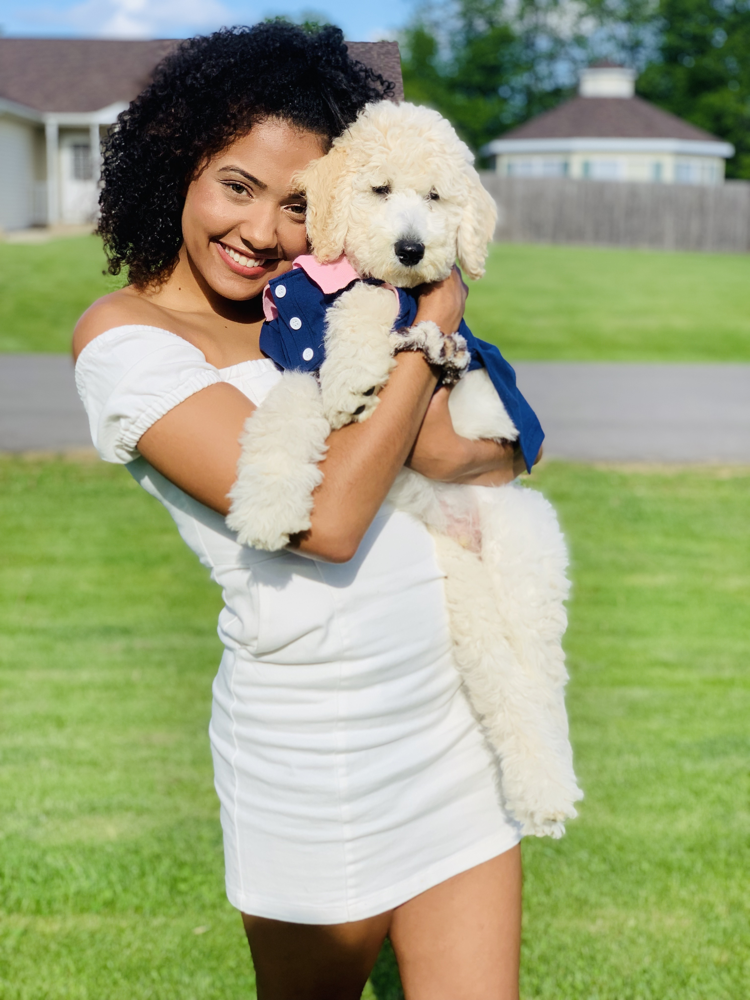
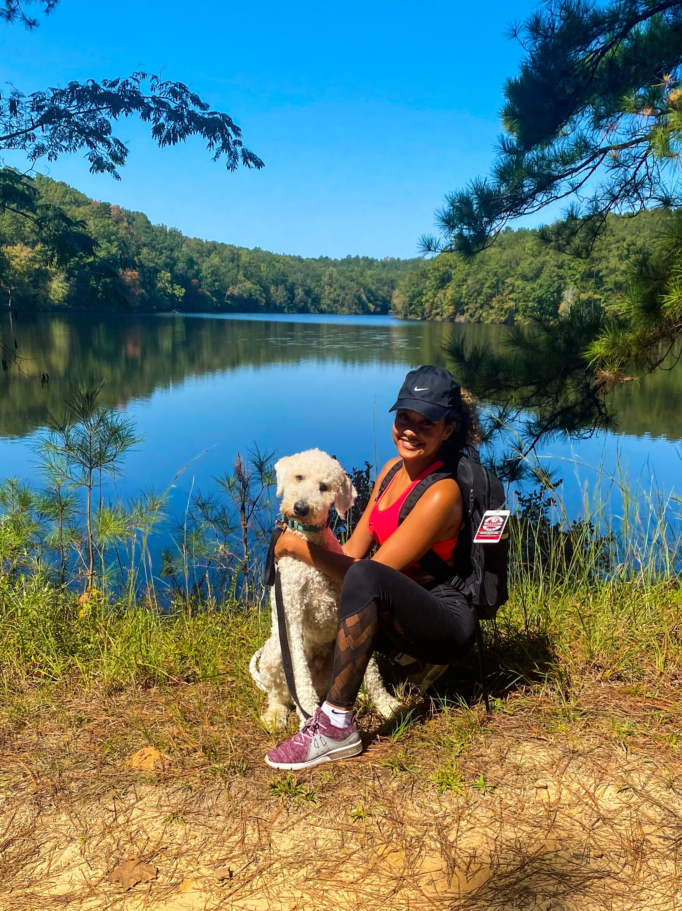
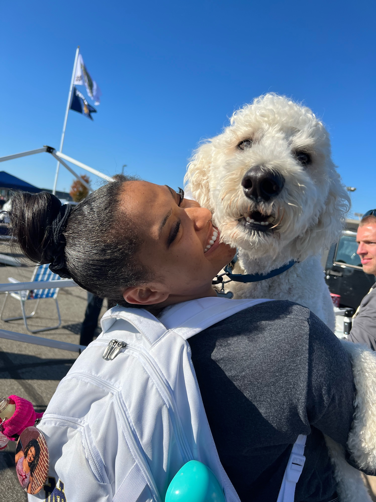
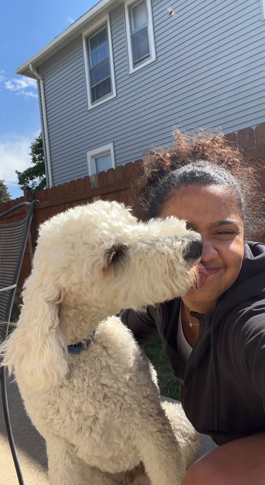
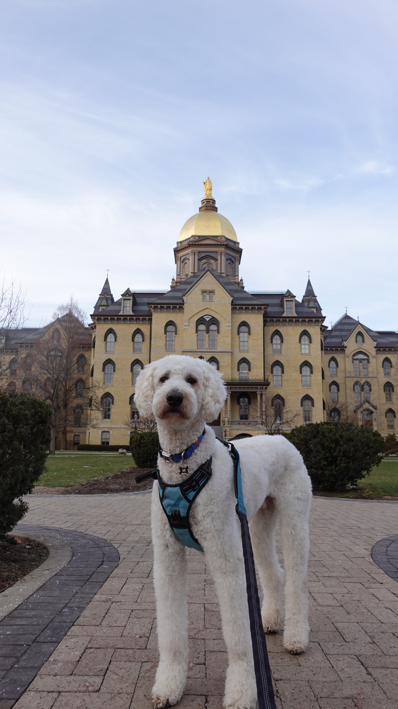
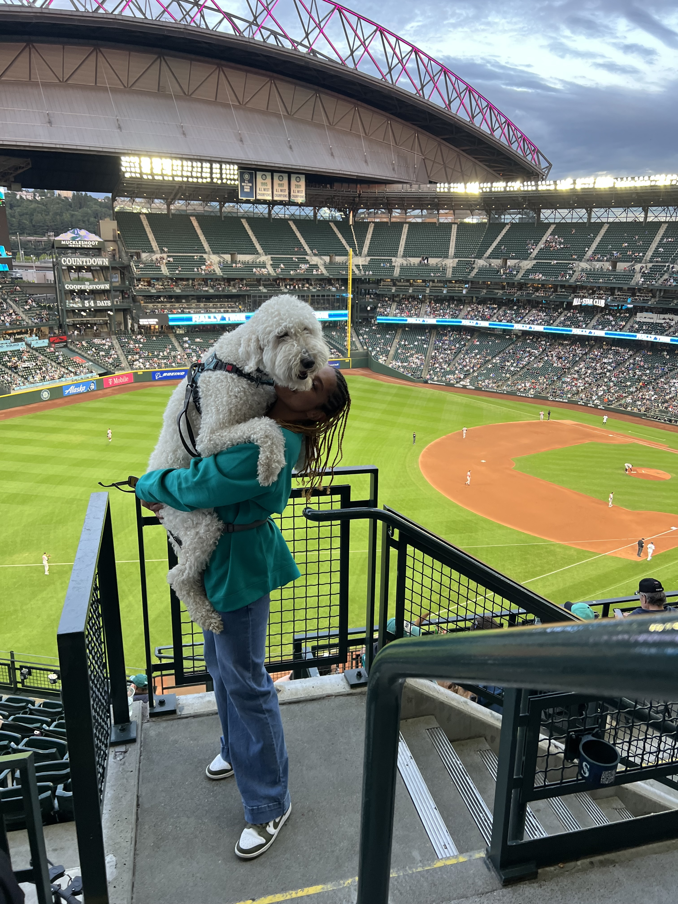
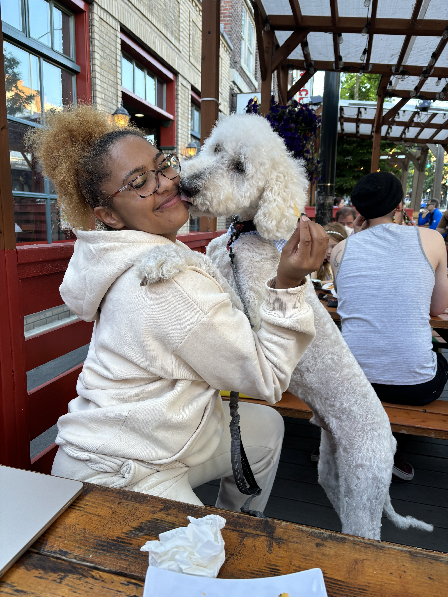
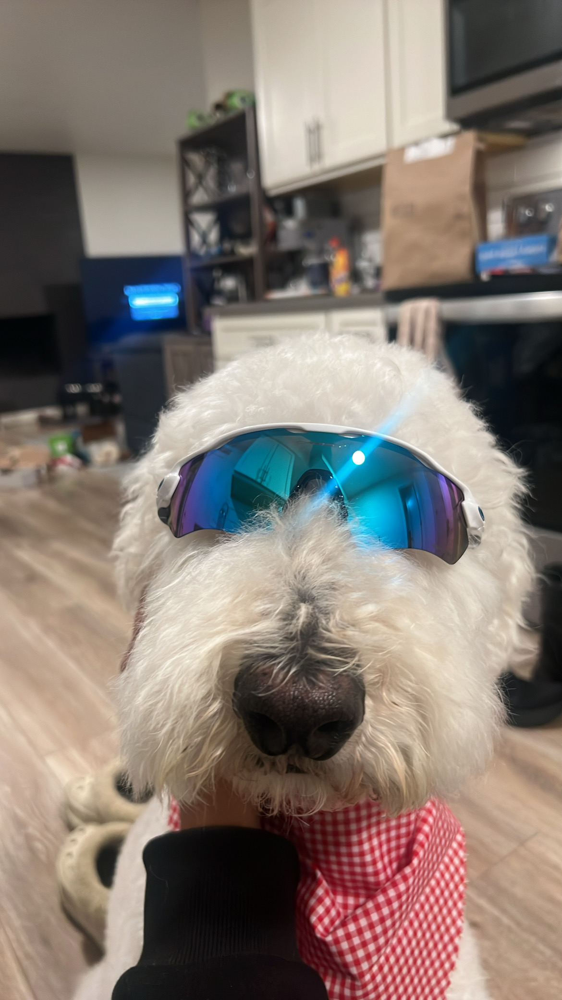
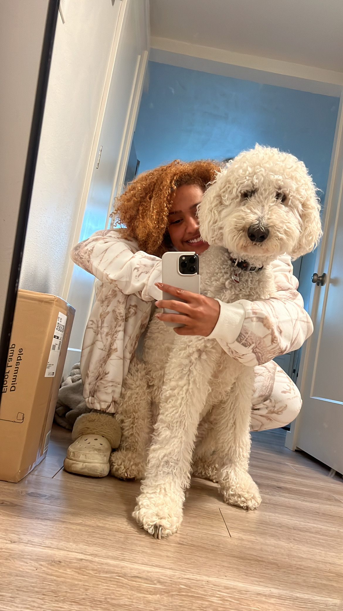

Hi, I’m Brianna Wimer, a fifth-year (and soon-to-be official Ph.D. candidate on November 18, 2025!) in Computer Science and Engineering at the University of Notre Dame, advised by Dr. Ron Metoyer. I live in Seattle, WA, where I work as a visiting researcher at the University of Washington, advised by Dr. Jen Mankoff.
If you’re wondering how that all happened—it’s a mix of receiving the Google PhD Fellowship, falling in love, realizing that my passion and purpose will always be in accessibility, and having the most incredible, supportive family who taught me to chase big dreams without fear. UW is one of the best places in the world for accessibility research, and I wanted nothing more than to learn directly from that community—so I found a way to make it happen.
My research sits at the intersection of accessibility and visualization, where I explore how we can make diagrams not only accessible to interpret but also authorable by people with disabilities. I built a system that turns flowcharts into accessible representations, which will be publicly available in January 2026.
My vision is to make visual knowledge accessible to everyone—to reimagine visualizations not as static images but as structured data that anyone can navigate, create, and reason with across modalities.
Beyond my research, I’m passionate about mentorship, motivation, fitness, and bridging academia with entrepreneurship. I believe technology can and will open doors to understanding, expression, and inclusion for all—it’s just up to the people building it to make sure that happens.
Latest News
Thrilled to share that the AccessViz Workshop has been accepted for a second year! I’ll be leading the workshop in Vienna, Austria this November at IEEE VIS 2025 to continue advancing conversations around accessible visualization research and practice.
Excited to announce that our paper "Autoethnographic Insights from Neurodivergent GAI “Power Users”" has been accepted to CHI 2025 and will be presented by Kate Glazko in Tokyo, Japan!
Our paper "Accessible Flowcharts: A Feasibility Study with BVI Participants" has been accepted to the Journal on Technology and Persons with Disabilities. I will present this paper at CSUN 2025 in Anaheim, California.
Our paper "Beyond Static Labels: Unpacking Nutrition Comprehension in the Digital Age" has been accepted to CHI 2024. I will be presenting this paper at CHI 2024 in Honolulu, Hawaii.
Our paper "Integrating Expertise in LLMs: Crafting a Customized Nutrition Assistant with Refined Template Instructions" has been accepted to CHI 2024. Annalisa Syzmanski will be presenting this paper at CHI 2024 in Honolulu, Hawaii.
Our paper "SPICA: Interactive Video Content Exploration through Augmented Audio Descriptions for Blind or Low-Vision Viewers" has been accepted to CHI 2024. Ning Zheng will be presenting this paper at CHI 2024 in Honolulu, Hawaii.
I'm thrilled to share that our TVCG paper on accessible data representations for non-vision disabilities has been accepted. More information about the paper can be found here.
I'm thrilled to share that our TVCG paper on accessibile data represenations for non-vision disabilities has been accepted. More information about the paper can be found here.
I'm thrilled to share that I'll be attending the IEEE VIS 2023 conference in Melbourne, courtesy of a diversity and inclusion scholarship.
I've relocated to Seattle, WA, to collaborate with Dr. Jennifer Mankoff at the Make4All lab as a visiting researcher.
I am honored to have received the Google Ph.D. Fellowship in the field of Human-Computer Interaction. Read the full story on the College of Engineering's website.
Exciting news! Our research paper, titled Understanding Food Planning Strategies of Food Insecure Populations, has been accepted for presentation at CHI 2023 in Germany.
And, how can I miss introducing my scholarly partner who has been by side since freshman year of undegrad and now is helping me navigate the Ph.D. program? Meet Sunny, my six year old Goldendoodle. He's an expert in napping and has an unparalleled ability to beg for treats. I wouldn't be able to do my academic journey without him!








